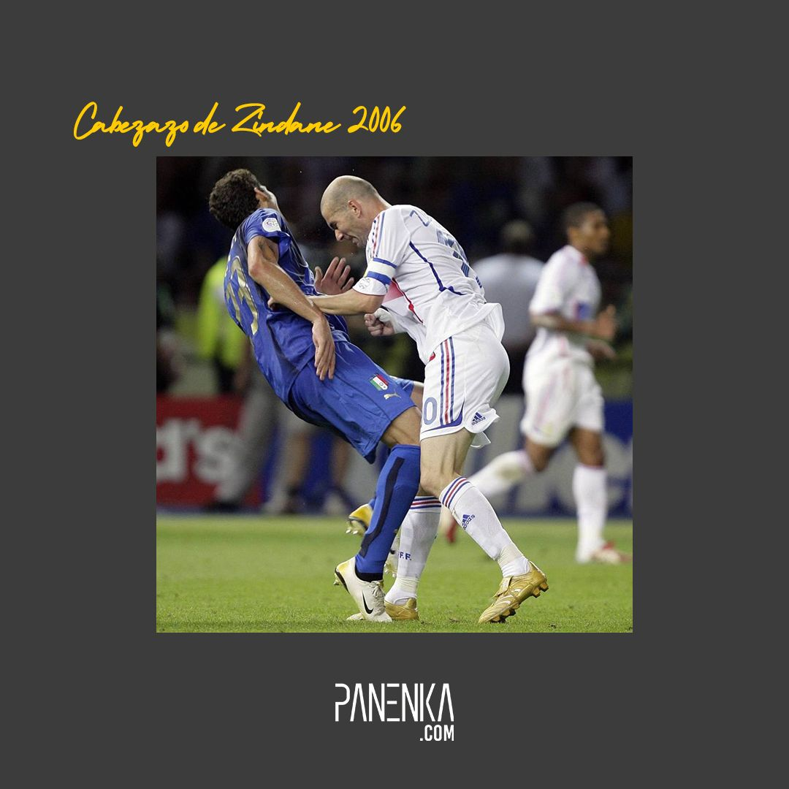
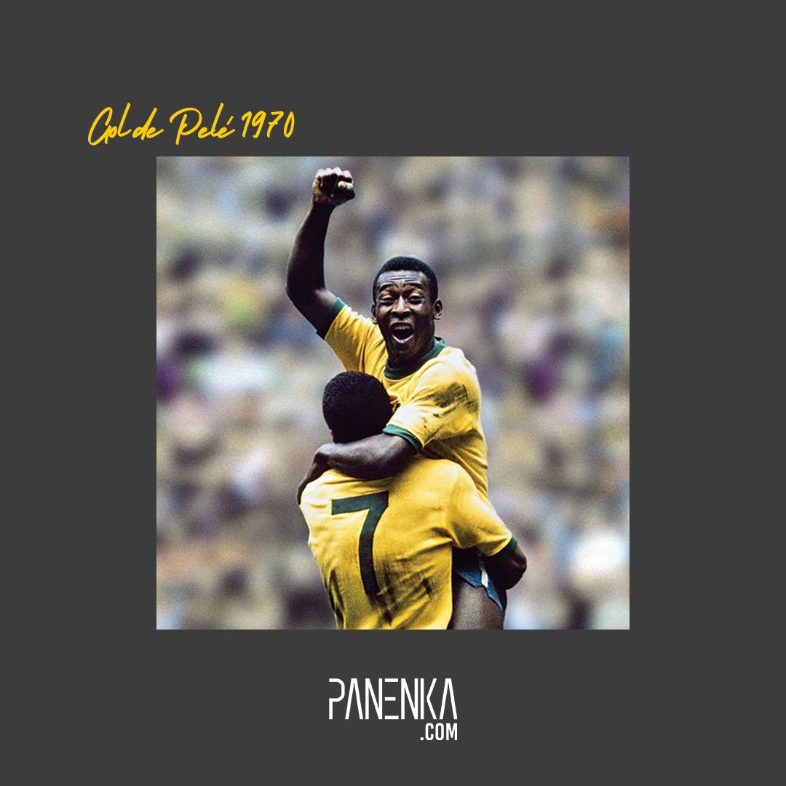

El proncipio del final
Corría el minuto 110 del partido (en plena prórroga) cuando el árbitro argentino Horacio Elizondo detuvo el partido porque Zinedine Zidane golpeó a Materazzi con un cabezazo en el pecho. El colegiado no vio el acción, pero el línier, el español Luis Medina Cantalejo, le avisó del cabezazo. Elizondo expulsó a Zidane del partido con tarjeta roja

El rey pele
Brasil hizo una obra de arte en la final México-70 y aniquiló el esquema italiano
*La “Rimet” se fue para siempre al Amazonas
*Un 4-1 para cuatro verdades: ganó el IX Mundial, se adueñó de la Diosa de Oro, dio ventaja de 5-4 para América y exaltó la grandeza del futbol ofensivo

Simplemente futbol
Fútbol de 1990, que se organizó en Italia entre el 8 de junio y el 8 de julio. Por su condición de campeón defensor, no tuvo que jugar el proceso clasificatorio. Esta fue su quinta participación consecutiva y la décima en total.

la suertte del pibe
Más conocido como 'Tití', el delantero francés inició su andadura en el mundo del fútbol allá por el 1994 cuando el Mónaco confió en sus cualidades como futbolista, pero no fue hasta meses después cuando Henry marcó sus primeros goles, en concentro, durante el arrasador encuentro entre el Mónaco y el Lens, cuyo luminoso reflejó un doloroso 6-0.
Cinco años después, el ariete francés firmó su contrato por el Arsenal después de que los 'gunners' pagaran 16 millones por sus servicios. Esta cifra les salió bastante rentable para lo que llegó a convertirse el mítico 'Tití'.